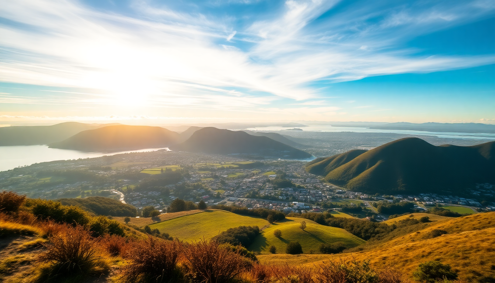

10-Day North Island Itinerary: Auckland to Wellington

We spent ten days driving the North Island from top to bottom, and honestly, it felt like the right pace—fast enough to cover the highlights, slow enough to actually enjoy them. This route hits three distinct cities and one serious mountain crossing, with enough flexibility to handle New Zealand’s famously fickle weather. Here’s exactly how we did it.
Why start in Auckland and end in Wellington?
Flying into Auckland is the obvious entry point—it’s the main international hub—but we treated it as a launchpad rather than a destination. After two nights to shake off jet lag, we picked up a rental car from Apex Car Rentals near the airport (cheaper than the big-name desks, and they don’t charge for a second driver). The drive south is a straight shot on State Highway 1, but we took the longer coastal route via Coromandel Peninsula on day three. That detour added two hours but gave us a swim at Hot Water Beach—dig your own spa pool in the sand at low tide. Skip the touristy Cathedral Cove parking chaos; instead, park at the Hahei Beach lot and walk the track early before the crowds.
What should you do in Rotorua besides the obvious?
Rotorua smells like sulfur. You’ll get used to it by hour two. We skipped the overpriced Te Puia geyser show and booked a free walk through Kuirau Park instead—active mud pools and steaming vents right in town, zero entry fee. For the full Maori cultural experience without the bus-tour vibe, we booked a hangi dinner at Mitai Maori Village. It’s a family-run operation, not a corporate production, and the food is cooked underground in a pit for three hours. The chicken and kumara (sweet potato) came out impossibly tender.
For adrenaline, we did the ZORB Rotorua hill rolling—you get strapped into a giant inflatable ball and rolled downhill. It’s silly, short, and exactly as ridiculous as it sounds. Worth the 30 bucks. We stayed at Sudima Hotel Rotorua, which has a private thermal pool in the courtyard. Book a room facing away from the main road—the street noise from Fenton Street can be loud on weekend nights.
Is the Tongariro Alpine Crossing worth the hype?
Yes, but only if you plan it right. The Tongariro Alpine Crossing is a 19.4-kilometer day hike across volcanic terrain, and it’s the best single-day walk I’ve done in New Zealand. The catch: it’s weather-dependent and crowded. We booked a shuttle from Tongariro Crossing Shuttles (they pick up from National Park Village, where we stayed at The Park Hotel—basic rooms but the only option within walking distance of the trailhead bus). Start by 6:00 AM. The early shuttle drops you at the Mangatepopo trailhead before the tour buses arrive.
The hike itself is brutal in sections—the Devil’s Staircase is a 200-meter vertical climb on loose scree—but the payoff is Emerald Lakes, three crater lakes in neon green and blue. Don’t skip the side trail to Red Crater; it adds 20 minutes but gives you a view of both coasts on a clear day. We finished around 2:30 PM, legs destroyed, and grabbed a burger at The Station Cafe back in the village. It’s the only decent food option for miles.
How many days do you need in Wellington?
Two full days is enough to see the city without rushing. We arrived via the Desert Road section of SH1—a stark, beautiful stretch through the volcanic plateau—and checked into QT Museum Wellington, which sits right on the waterfront. The rooms are quirky (think exposed concrete and velvet chairs), but the location is perfect: five minutes walk to Te Papa Tongarewa, the national museum. That museum is free and huge; we spent three hours and only covered the Maori artifacts and the earthquake house. Skip the paid exhibitions unless you’re into niche art.
For food, we hit Cuba Street for dinner at Fidels—a Cuban cafe with live jazz on Friday nights and the best fish tacos I’ve had outside Mexico. For coffee, Flight Coffee Hangar on Dixon Street does a flat white that actually tastes like coffee, not milk. And if you have a spare morning, take the Cable Car up to Kelburn for the view over the harbor, then walk back down through the Botanic Garden—it’s a gentle 30-minute descent through native bush.
What’s the best way to get between cities?
We drove the entire loop, and I’d recommend it over buses or tours. The roads are well-maintained but narrow—expect one-lane bridges on the Coromandel leg and sudden fog on the Desert Road near Tongariro. We rented a Toyota Corolla from Apex, and it handled everything fine; you don’t need a 4x4 unless you’re planning to venture onto gravel roads (which we didn’t). Fuel is expensive—budget about NZD $2.80 per liter—and toll roads exist on the Northern Gateway near Auckland. You can pay online afterward, but it’s easier to set up an account with Toll Road NZ before you leave.
The drive from Rotorua to National Park Village takes about two hours on SH5, and from National Park to Wellington is roughly four hours. We broke that last leg with a lunch stop at Taihape, a small town known for gumboot throwing—yes, it’s a thing. The Brown Sugar Cafe there does a decent pie.
When is the best time to do this itinerary?
We went in late March (early autumn), and it was near-perfect. Days were warm (18-22°C), crowds had thinned after summer, and the Tongariro track was dry. The downside: daylight hours shrink to about 12 hours, so you lose the long summer evenings. Summer (December-February) is peak season—expect queues at Hot Water Beach and booked-out shuttles for Tongariro. Winter (June-August) means snow on the crossing and possible road closures on the Desert Road. Spring (September-October) is unpredictable; we met a couple who got rained out of the crossing in October.
FAQ
Is the Tongariro Alpine Crossing safe for beginner hikers? It’s doable if you’re reasonably fit, but it’s not a casual stroll. The elevation gain is about 800 meters, and the terrain is uneven volcanic rock. We saw people in sneakers struggling on the descent—wear proper hiking boots with ankle support. Check the DOC website for weather warnings before you go; they close the track for high winds or lightning risk.
Where should I book accommodation in Rotorua? Sudima Hotel Rotorua is our pick for mid-range comfort with thermal pools. For budget travelers, Base Rotorua hostel is central and social. Avoid the motels on Fenton Street near the highway—they’re noisy and dated. Book at least a month ahead in summer.
Can I do this trip without a car? Yes, but it’s less flexible. InterCity buses connect Auckland, Rotorua, and Wellington, and shuttle services cover Tongariro. But you’ll miss the Coromandel detour and the freedom to stop at roadside fruit stands (the feijoas in March are incredible). If you don’t drive, consider a small-group tour like Kiwi Experience for the North Island leg.
Conclusion
- Start in Auckland but leave by day two—the city is a gateway, not the main event.
- Spend two nights in Rotorua for geothermal parks and a hangi dinner; skip the tourist-trap geyser shows.
- Book the Tongariro Crossing shuttle early and hike by 6:00 AM to beat the crowds.
- Give Wellington two full days for Te Papa and Cuba Street food.
- Drive yourself for flexibility, but budget for fuel and plan for one-lane bridges.